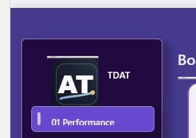

Project 20 Signature QA
Final PBIX reads the source assets/favicon.svg as the signature image and keeps TDAT as editable text. No recreated PNG or native-shape logo is used.
Source asset
Power BI Desktop crop

Logo is visible without vertical or horizontal scrolling inside the signature visual.
TDAT label remains visible next to the favicon.
Legacy rectangle/shape approximation was removed from the signature area.